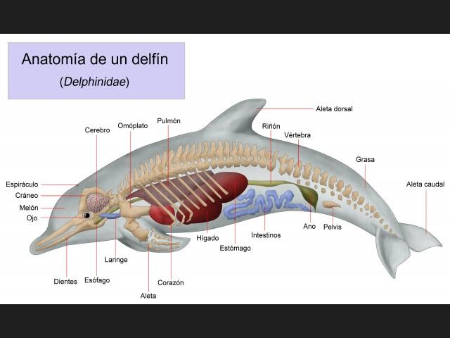
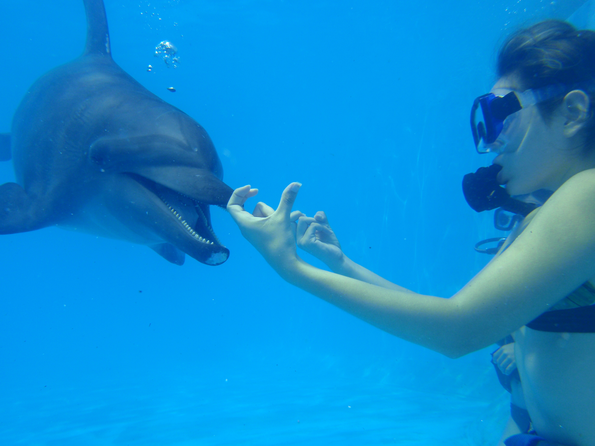

Por convergencia evolutiva su anatomía tiene mucha semejanza con el género extinto de reptiles marinos denominado Ichthyosaurus. Las especies pertenecientes a la familia Delphinidae poseen un cuerpo fusiforme, adaptado a la natación rápida. La aleta de la cola, llamada caudal, se utiliza para la propulsión, mientras que las aletas pectorales son usadas para el control direccional del nado. Los patrones básicos de coloración de la piel son tonos de gris, con mayor claridad en el vientre y rangos más oscuros en el lomo. A menudo se combina con líneas y manchas de diferente tinte y contraste. Al igual que otros odontocetos, en la cabeza poseen el melón, un órgano esférico que utilizan para la ecolocalización. En varias especies de la familia, las mandíbulas se alargan, formando un hocico delgado distintivo. Poseen dentición homodonta, con un número de piezas dentales que oscila de 20 a 50 en cada mandíbula. Respiran a través de un solo orificio en la parte superior de su cabeza, denominado espiráculo.1 Su cerebro es grande, con la corteza cerebral bastante desarrollada en comparación con la media de los mamíferos.

Los delfines son animales sociales que viven en grupos familiares. En lugares con una gran abundancia de alimentos, estos grupos pueden exceder los 1000 individuos. Los delfines pueden establecer fuertes lazos sociales, donde incluso algunos individuos heridos o enfermos son cuidados por otros, incluso ayudando a respirar al llevarlos a la superficie si fuese necesario. Al menos en la especie Tursiops truncatus, se ha demostrado que cada delfín posee un nombre propio o silbido característico, que sirve para llamarlo a la manada. Los delfines muestran desarrollo de cultura, algo que por mucho tiempo se creyó que era único del ser humano (y posiblemente de otras especies de primates). En mayo de 2005, se descubrieron en Australia delfines del Indo-Pacífico que enseñaban a sus crías a usar las herramientas, cubriendo sus hocicos con esponjas para protegerlos mientras se alimentan. Este conocimiento es traspasado por las madres a sus hijas, a diferencia de los primates, donde el conocimiento es generalmente transmitido a ambos sexos.? Los delfines también pueden participar en actos de agresión hacia otros delfines. Un delfín macho adulto es muy probable que presente en su cuerpo varias cicatrices producto de mordeduras. Los delfines machos participan en esos actos de agresión, debido a los conflictos entre compañeros y la competencia por las hembras.